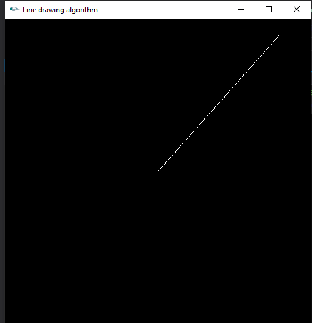
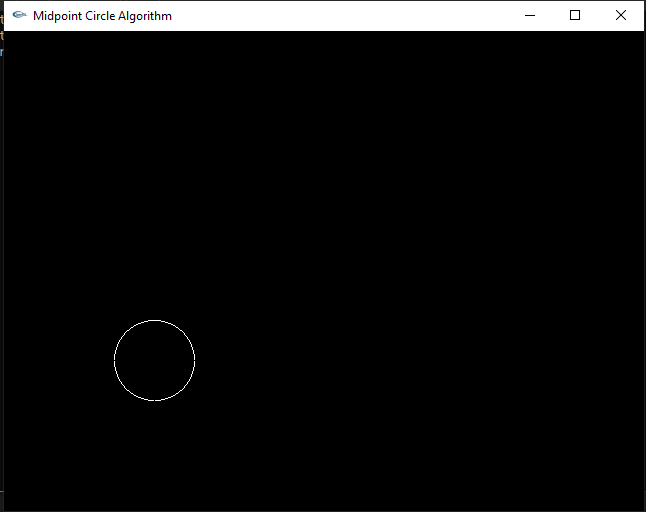
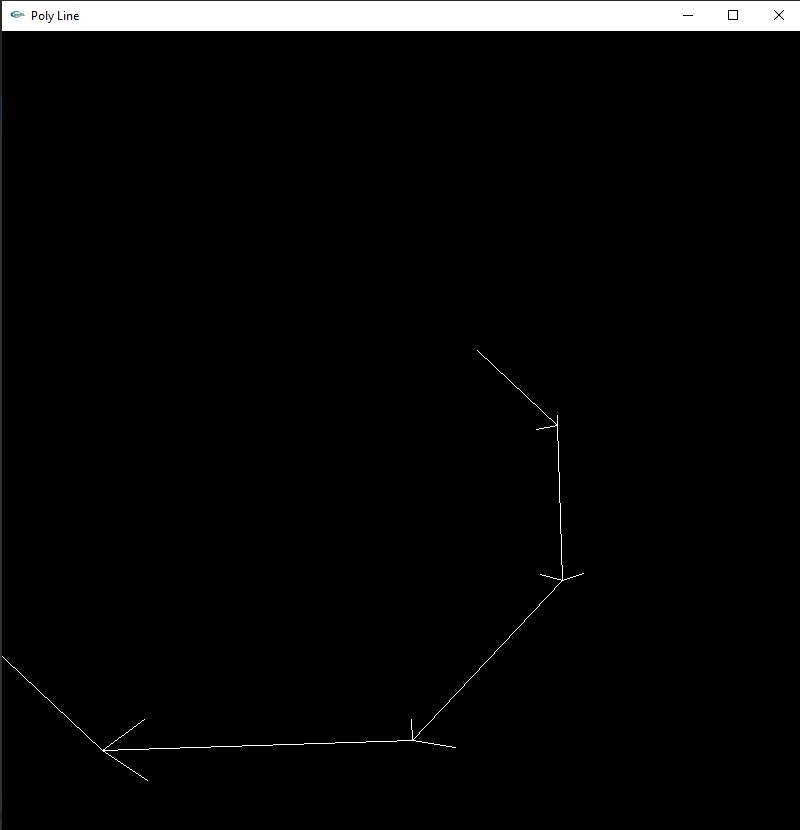
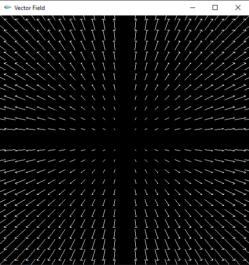
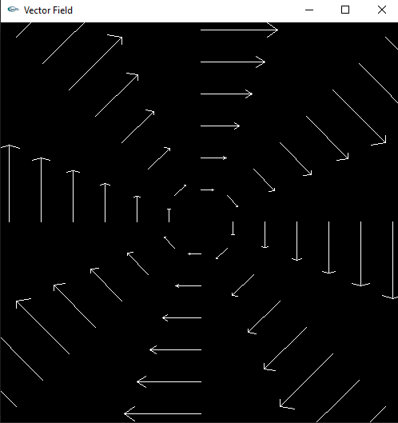
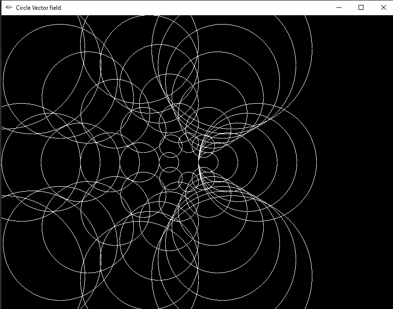
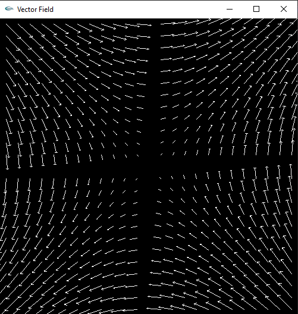
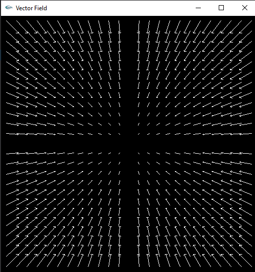

|
Assignment_1
|


|
|
Assignment_1
|
|
Starting point : \({(0,0)}\)
Ending point : \({(200,225)}\)

Centre : \({(150,150)}\)
Radius : 40

\({F(x,y) = y\hat{i} - x\hat{j}}\)

\({F(x,y) = x\hat{i} + y\hat{j}}\)

\({F(x,y) = y\hat{i} - x\hat{j}}\)


\({F(x,y) = y\hat{i} + x\hat{j}}\)

\({F(x,y) = -x\hat{i} - y\hat{j}}\)

Setting up OpenGL in linux.
Creating a Debug Window.
Finding the exact pixel densities for different graphs to generate a well viewing vector field.
Implementing arrow head of each vector.